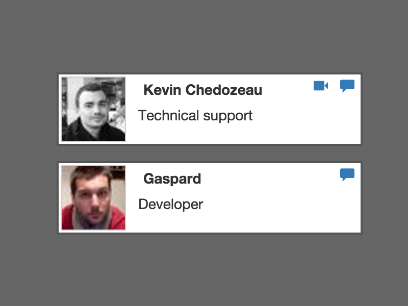
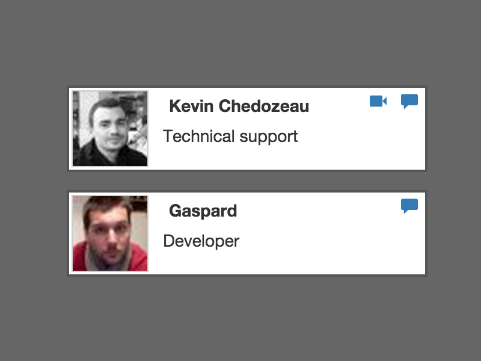

What is the Abstract UI ?
The abstract UI is even more powerful than custom CSS, it allows you to take total control of our availability callbacks and to make calls.
Please try our demo with VideoDesk live agents at
Customize the VideoDesk solution to fully adapt it to your environment, your design and your user experience paradigm.
The abstract UI is even more powerful than custom CSS, it allows you to take total control of our availability callbacks and to make calls.
Please try our demo with VideoDesk live agents at
To use VideoDesk’s availability monitoring and call button option (or "abstraction" as it is also called), two things have to be done:
The JavaScript source code provided must be embedded on your webpages, as for standard use of the chat module.
A new parameter indicates if the abstraction option has been activated or not:
_videodesk['abstraction'] = 'on' ;
If the new parameter is not included in the code or if the value is different than "on", VideoDesk automatically considers that the value is "off". The JavaScript behavior will be the same as usual and will display the chat invitation if agents are available.
If abstraction is set to "on", the JavaScript won't display anything on the page.
VideoDesk’s JavaScript code analyses the agent and network availability display criteria and calls a JavaScript function you must add yourself, with a variable containing VideoDesk’s availability status as a parameter.
For more detailed information, please read our documentation about availability monitoring and call buttons.
This code snippet simply checks if an agent is available and displays a text accordingly in a #chat_availability_simple DOMElement.
function _videodeskGetAvailability(availability){
var html = "";
if(available.nb_agents_available > 0) {
html = "<p>We are available :-)</p>";
}
else {
html = "<p>Sorry, we are not available right now</p>";
}
// append to DOM
$("#chat_availability_simple").empty().html(html);
}
This is a simple agent-list display based on availability monitoring, the call button and jQuery. Your website have to be configured in agent-list mode to test this.
function _videodeskGetAvailability(availability){
var html = '';
for (id in availability.agents) {
// ignore unavailable agents
if(availability.agents[id].available_mode !== "unavailable") {
html += "<div>";
html += availability.agents[id].username;
html += " - <a href=\"javascript:_vdk.call('text','";
html += id;
html += "')\">text chat</a>";
html += "</div>";
}
};
// append to DOM
$("#chat_agentlist_simple").empty().html(html);
}